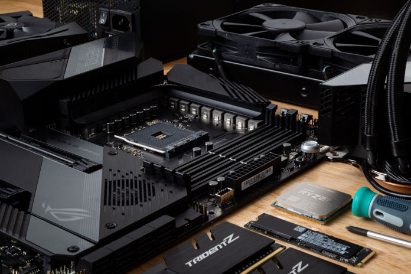

Goal
- To organize all our parts and prepare to build.
- Learn how to assemble our computer.
- Learn how install an operating sytem and start the system.
Parts we will need

To start with building our computer we want to make a check list to ensure that we are going to have everything we will need for the project:
A motherboard
A CPU, heat sink, and thermal paste
Ram
Hard drive
A Power supply
A Case
And a GPU
Then we are going to find a clean area to start our building process.
Starting our build
Once we have everything laid out, we are going to start unboxing our motherboard and placing it on top of its box as we don’t want to have any static electricity break our parts.
We will now open the hinge that is on the CPU socket.
Now we grab our CPU and look for a gold triangle that will be on one of the corners and look for a corresponding on the CPU socket. Then we will line those triangles up and socket
the CPU. Once it is in, we will close the latch on the socket to keep it in place.
Now we will grab our ram stick and place and look at the notch that is on them and match it with the corresponding slot on the motherboard. We want to make sure that we place them
in the right direction and not try to force them. Once they are in, we will hear a nice click.
Now we will put our thermal paste on our CPU and mount the heat sink. These can vary based on your CPU but all follow the same general installation method. We want to place the mounting
bracket through the corresponding holes on our motherboard. Once it is in, we apply our thermal paste to our CPU and place the heat sink on top of it making sure we line it up with the
standoffs then we will tighten the heat sink to the bracket but not too tight though.
Now we will mount our motherboard into its case there should be standoffs for screws preinstalled in the case and we want to line those up with the holes in the motherboard. Once they
are lined up, we will screw it in.
Then we will connect our hard drive to the mother board
Lastly, we will install our power supply in its corresponding slot in the computer case then we will take the cables and plug them into their labeled slots.
Installing our OS
To install our operating system, we want to have a preloaded flash drive with the operating system installation on it. We can either buy this from a store or if you have a spare
16 GB flash drive and a computer you can download it from Microsoft's website. Once we have our flash drive, we will plug it into a USB port on the computer and then boot the system.
When the system starts, we want to push the F12 key on the keyboard to open the boot menu. From there we will click on USB flash drive and the system should load into the windows installation.
Once we are finished with the installation it will ask us to choose a drive for the installation, but we will first need to use their format tool to get the hard drive to be in the proper format,
when this is finished, we can start the installation on the hard drive it may take a while so just be patient. Once the installation is done, we should be greeted with the windows startup screen just
follow along with the prompts to the end and you will be on the desktop. Lastly, we will want to download our drivers for all our devices. The best way to do this is to go to the manufacturers' website and they will have the driver available for download.
Once all the drivers are installed, we are done, and you have successfully built your computer!